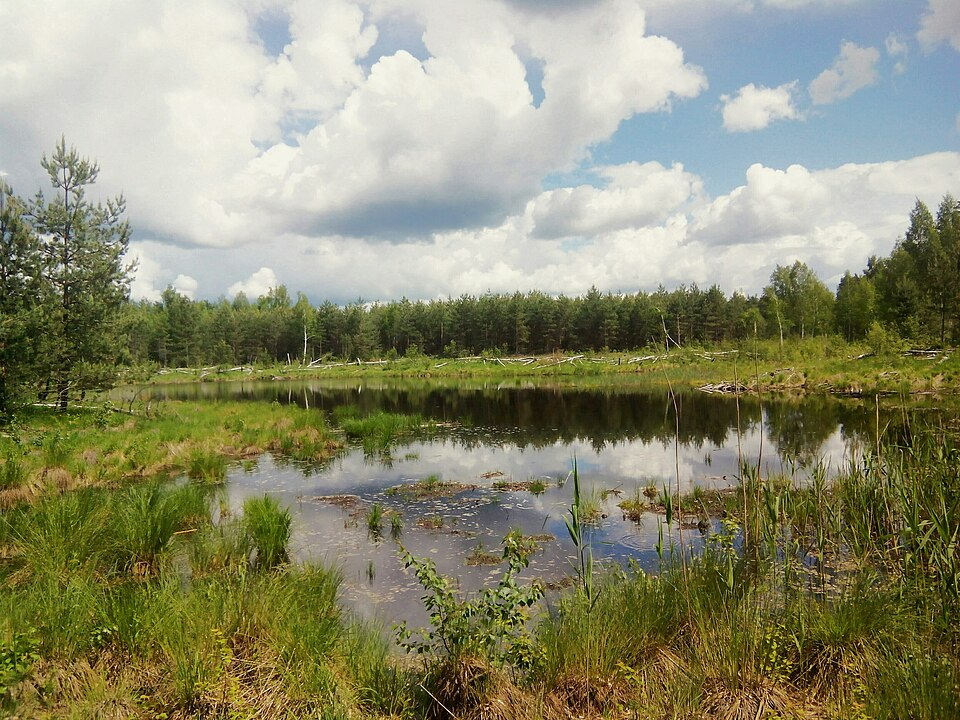
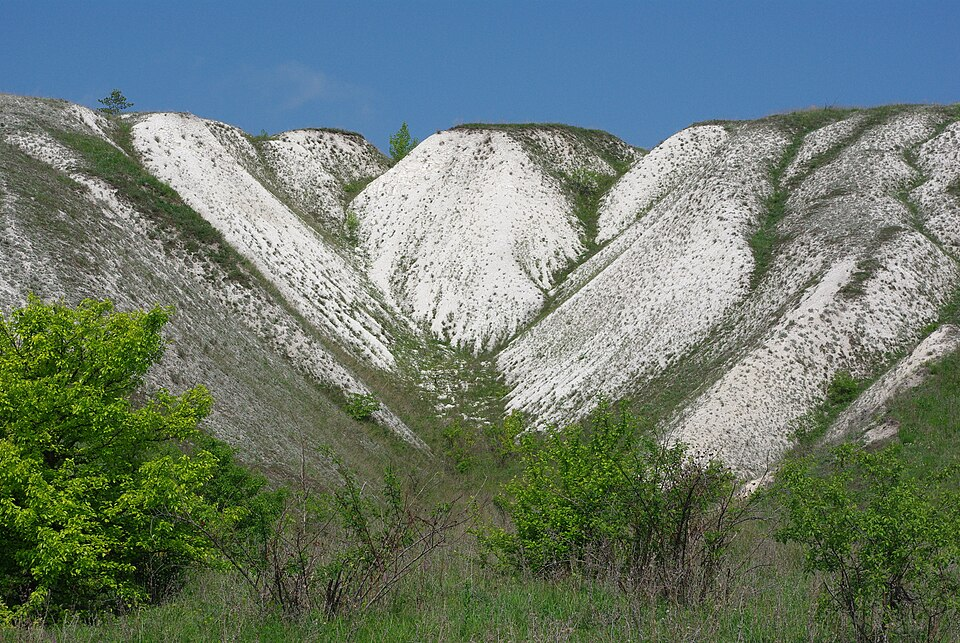
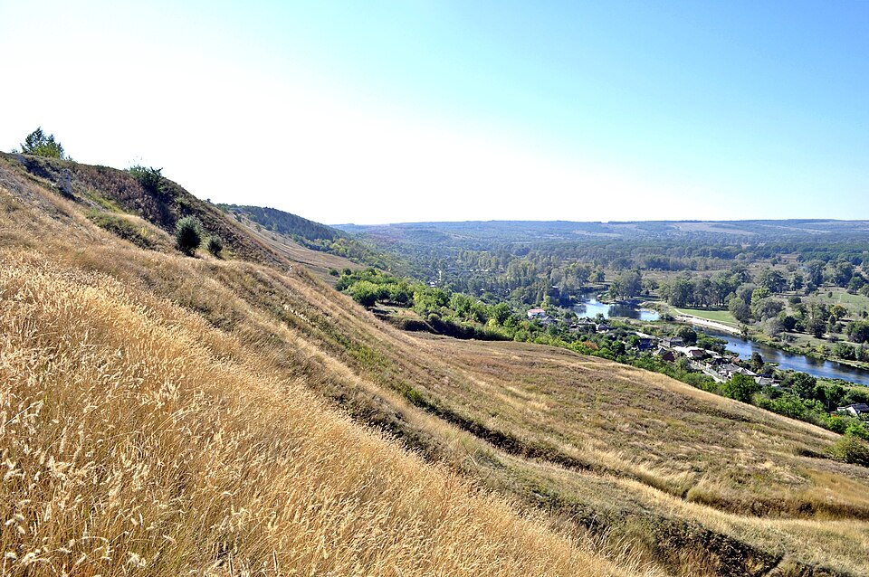
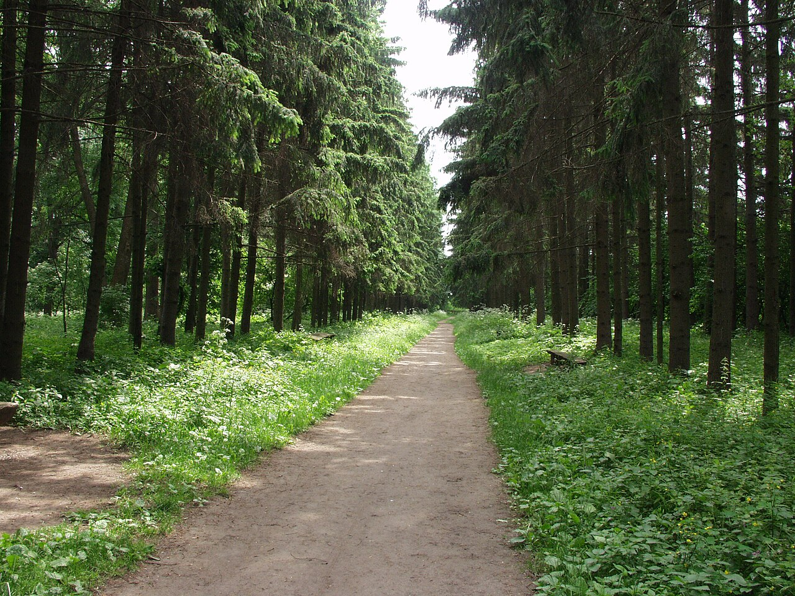
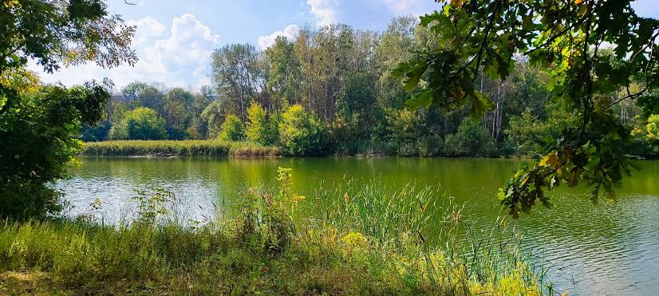
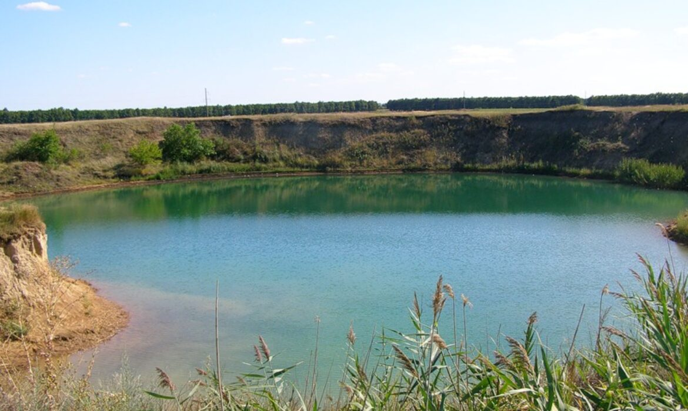

НПП «Слобожанський»
Заповідний лісовий масив у басейні річки Мерла з унікальними реліктовими болотами, озерами та багатим тваринним світом.
ВідкритиУнікальна природа, заповідні зони, крейдяні гори та мальовничі ландшафти Слобідської України.
Слобожанщина - це регіон із поєднанням природних зон, де вікові лісостепові діброви межують із безкраїми степами, піщаними дюнами та білосніжними крейдяними схилами. Таке ландшафтне різноманіття робить край привабливим для екотуризму, піших прогулянок та відпочинку на природі.
На цьому сайті зібрано сім визначних природних і ландшафтних пам'яток Харківщини, які варто відвідати кожному мандрівнику та мешканцю регіону для планування цікавих маршрутів вихідного дня.

Заповідний лісовий масив у басейні річки Мерла з унікальними реліктовими болотами, озерами та багатим тваринним світом.
Відкрити
Мальовничі крейдяні гори вздовж правого берега річки Оскіл, де збереглися рідкісні реліктові рослини крейдяних відслонень.
Відкрити
Найвища точка Харківської області поблизу міста Ізюм із панорамним краєвидом на долину Сіверського Дінця та давніми кам'яними бабами.
Відкрити
Незвичайний природний ландшафт із хвилястими піщаними барханами, острівцями хвойного лісу та степовою рослинністю.
Відкрити
Один із найстаріших дендропарків України, заснований наприкінці XVIII століття, з рідкісними екзотичними деревами та мальовничими ставками.
Відкрити
Вікові діброви на крутих схилах Сіверського Дінця, овіяні легендами Козачої гори та багатою історико-археологічною спадщиною.
Відкрити
Унікальна водойма техногенного походження з високою мінералізацією води, що утворилася на місці газової свердловини.
Відкрити